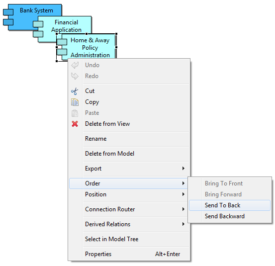

Overlapping elements in a View can be brought to the front or back, or brought forward or sent back. This is also known as the "Z" order. This is achieved by selecting the element in a View and right-clicking to invoke the "Order" menu items. These same menu items are also available from the main "View" menu.
Changing the order of overlapping elements